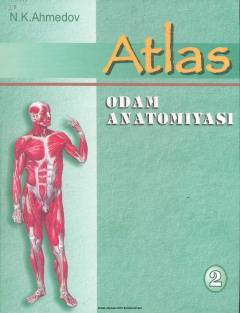

AOOdam anatomiyasining qon tomirlar va nerv sistemasiga bag'ishlangan ikkinchi jildli atlasi.
Ushbu atlas odam anatomiyasining qon tomirlari, nerv sistemasi va sezgi a'zolariga bag'ishlangan. Kitob oliy o'quv yurtlari talabalari, shuningdek akademik litsey va kasb-hunar kollejlari o'quvchilari uchun mo'ljallangan.